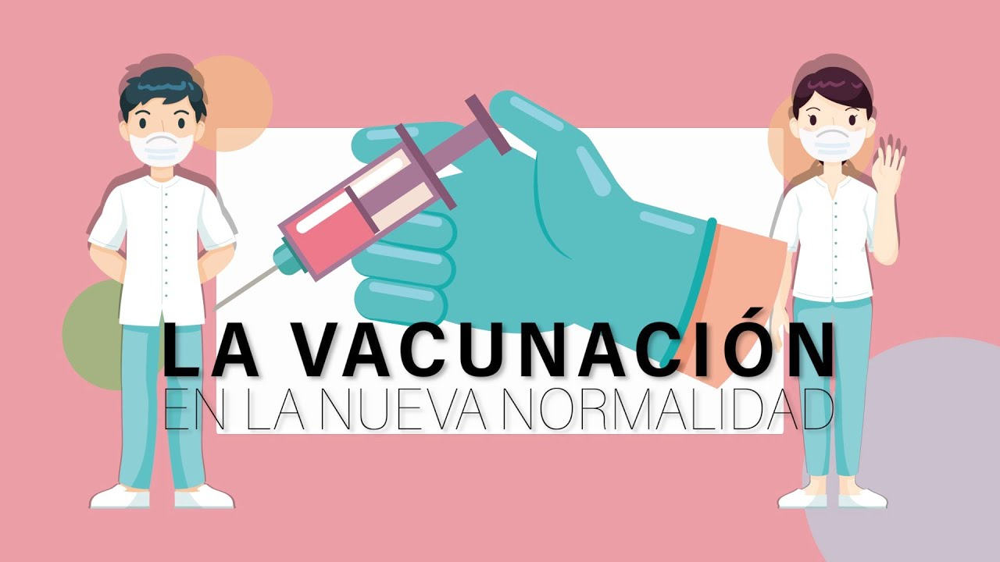
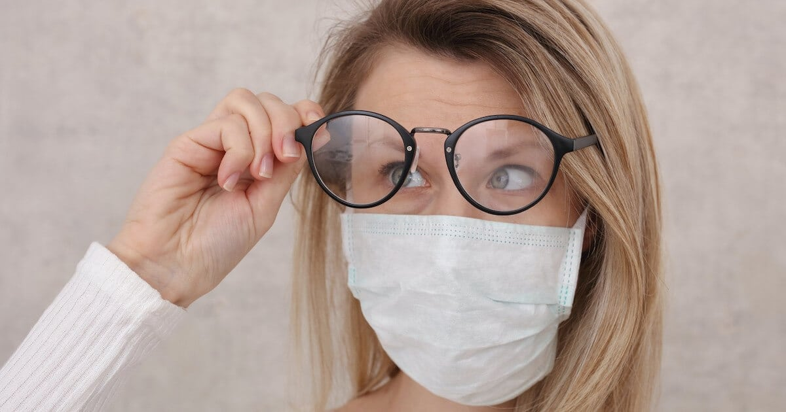

Pelea al virus
con vacunas
Detengamos esta pandemia aniquilando al virus con la vacuna

¿Porqué me tengo que vacunar?
Es un ordenamiento para prevenir
infectarte de Covid-19, identifica
los 4 beneficios con la vacunación
Preparación antes de la vacuna
*Evitar bebidas alcohólicas
*Evitar el estres
*Comer sano
*Dormir lo suficiente
*Hacer ejercicio
*Evitar el estres
*Comer sano
*Dormir lo suficiente
*Hacer ejercicio
Atención 24 hrs